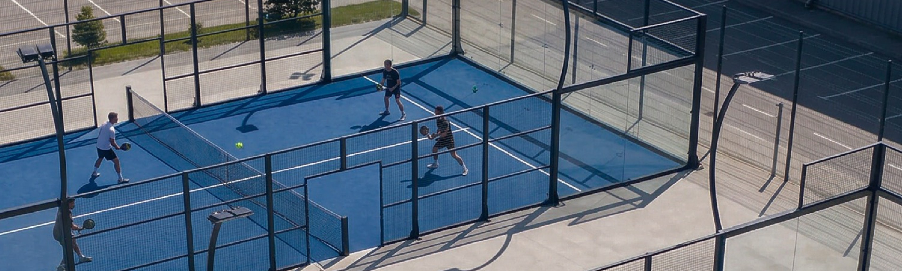
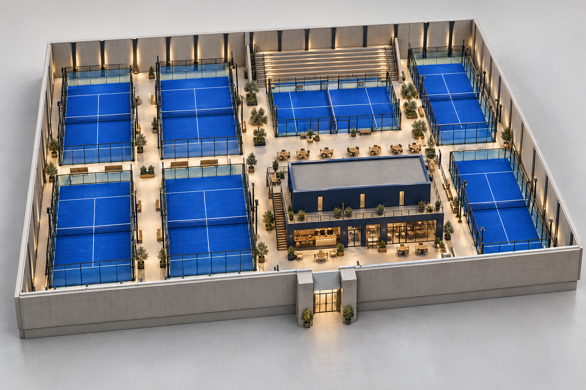

POUND4PADEL
Твоя игра. Твои люди.
Найти свой форматЕсть игра.
Есть свои.
Заходишь ради матча.
Возвращаешься ради людей.
POUND4PADEL объединяет тех, кто впервые берёт ракетку, и тех, кто уже не представляет неделю без корта. Здесь есть место твоему азарту, твоему темпу и твоей компании.
Посмотреть будущий клубКак сыграем?
Три повода выйти на корт.
Выбирай свой.
Четверо на корте. Ты в игре.
Начни с одного
розыгрыша.
Не нужно сразу играть красиво. Для начала - разобраться с подачей, почувствовать мяч и попробовать вернуть его через сетку.
- Знакомство с правилами
- Первые подачи и удары
- Игра в своём темпе
Четверо.
Одна игра.
Соберите компанию и разделитесь на пары. Общий план на вечер, который не заканчивается последним розыгрышем.
- Парный формат
- Своя компания
- Свой ритм игры
Точнее удар.
Больше игры.
Подача, позиция у сетки, взаимодействие с партнёром. Выберите то, что хотите улучшить, и работайте над этим на корте.
- Техника ударов
- Движение и позиция
- Тактика парной игры
Больше,
чем корт.
У игры будет свой дом.
В концепции клуба - корты, пространство для отдыха и место, где можно остаться после матча.

На корте - соперники.
За его пределами - свои.
Остаться после игры
В проекте предусмотрены бар и зона отдыха с видом на корты. Чтобы обсудить удачный удар и договориться о следующем матче.
Первая игра?
Всё получится.
Несколько ответов,
чтобы увереннее выйти на корт.
Никогда не играл. Это сложно?
Начните с правил и спокойных розыгрышей. В падел обычно играют парами, а стены участвуют в игре. Для первого знакомства важнее почувствовать мяч, чем сразу освоить все удары.
Что взять с собой?
Удобную спортивную одежду, обувь для корта и воду. Условия аренды ракеток и инвентаря клуб сообщит перед открытием записи.
Можно прийти своей компанией?
Для парной игры соберите четверых. Доступное время, стоимость и условия бронирования появятся после запуска записи.
Когда можно забронировать корт?
Запись пока не открыта. Это концепция сайта будущего клуба. Дата открытия, расписание и контакты ещё не опубликованы.